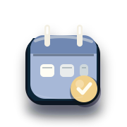

EVENTI & TEMPO LIBERO
Più cose da fare. Meno tempo perso.
Scopri eventi e idee utili con percorsi più chiari, strumenti leggibili e una gerarchia pensata per arrivare subito a ciò che ti interessa.
Prova: eventi, Brescia, weekend, attività, tempo libero…
Vai subito a
SCELTE PIÙ RAPIDE
Dal “cosa facciamo?” a qualcosa di concreto.
Gli strumenti principali sono ora separati dalle utilità specifiche, con più profondità visiva e meno rumore quando vuoi decidere in fretta.
TEMPO LIBERO, SEMPLICE
EventiFonti e proposte più leggibili.
WeekendParti dalle cose più utili.
TerritorioFocus sulle informazioni concrete.
SceltaMeno passaggi prima dell'azione.
STRUMENTI PRINCIPALI
Scopri cosa fare
Le scorciatoie più utili per il tempo libero.
ALTRI STRUMENTI
Esplora altre possibilità
Utilità più specifiche, senza affollare la scelta.
Non trovo uno strumento con queste parole. Prova con “eventi”, “weekend” o “Brescia”.